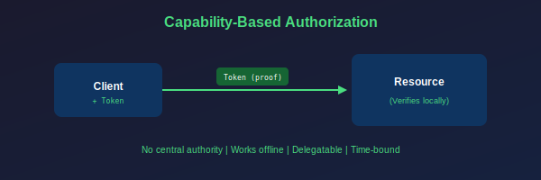
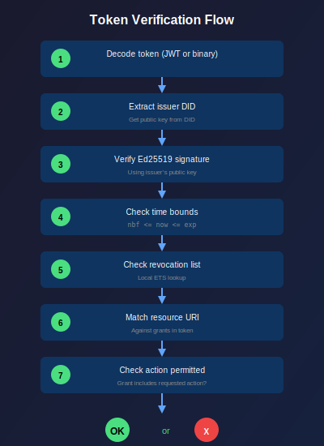

Capability-Based Security
View SourceThis guide explains the security model used in the reckon-db ecosystem and how to implement it in your applications.
Prerequisites
Before reading this guide, you should understand:
- Basic event sourcing concepts (Event Sourcing Guide)
- Public-key cryptography basics (signing, verification)
- The difference between authentication and authorization
The Problem: Centralized Authorization Doesn't Scale
Traditional security models rely on a central authority:

Problems with this approach:
- Single point of failure - If the auth server is down, nothing works
- Network dependency - Every request requires a round-trip
- Partition intolerance - Network splits break authorization
- Scalability bottleneck - All requests funnel through one service
In a distributed mesh (like Macula), nodes may be temporarily disconnected. We need authorization that works offline.
The Solution: Capability Tokens
Capability tokens are self-proving - they carry their own authorization:

Benefits:
- No central authority needed - Any node can verify
- Works offline - Verification is cryptographic, not network-based
- Delegatable - Permissions can be passed with attenuation
- Time-bound - Short TTLs limit damage from compromised tokens
Architecture Overview

Component Responsibilities
| Component | Location | Responsibility |
|---|---|---|
esdb_identity | Your Application | Generate keypairs, manage identities |
esdb_capability | Your Application | Create, sign, delegate, encode tokens |
esdb_capability_verifier | reckon-db Server | Verify signatures, check permissions |
esdb_revocation | reckon-db Server | Track revoked tokens |
Key insight: Token creation happens in your application. Token verification happens on the reckon-db server. reckon-gater provides the types and helpers, but doesn't enforce security.
Part 1: Identity Management (Your Application)
Identities are Ed25519 keypairs. The public key is encoded as a DID (Decentralized Identifier).
Generate an Identity
%%--------------------------------------------------------------------
%% This code runs in: YOUR APPLICATION
%% Purpose: Create a new identity for your service/user
%%--------------------------------------------------------------------
-include_lib("reckon_gater/include/esdb_capability_types.hrl").
%% Generate a new Ed25519 keypair
Identity = esdb_identity:generate().
%% The identity contains:
%% - Public key (shareable)
%% - Private key (keep secret!)
%% - DID (public key encoded as did:key:z...)
%% Get the DID for sharing with others
DID = esdb_identity:did(Identity).
%% => <<"did:key:z6MkhaXgBZDvotDkL5257faiztiGiC2QtKLGpbnnEGta2doK">>Store Identities Securely
%%--------------------------------------------------------------------
%% This code runs in: YOUR APPLICATION
%% Purpose: Persist identity across restarts
%%--------------------------------------------------------------------
%% NEVER store private keys in:
%% - Version control
%% - Environment variables (can leak in logs)
%% - Unencrypted files
%% DO store private keys in:
%% - Hardware security modules (HSM)
%% - Encrypted at rest with a master key
%% - Secrets management (Vault, AWS Secrets Manager)
%% Example: Load from encrypted file
load_identity(Path, MasterKey) ->
{ok, Encrypted} = file:read_file(Path),
Decrypted = crypto:crypto_one_time(aes_256_gcm, MasterKey, Nonce, Encrypted, false),
{PubKey, PrivKey} = binary_to_term(Decrypted),
esdb_identity:from_keypair(PubKey, PrivKey).Why DIDs?
DIDs (Decentralized Identifiers) are a W3C standard for self-sovereign identity. The did:key method encodes the public key directly in the identifier:
did:key:z6MkhaXgBZDvotDkL5257faiztiGiC2QtKLGpbnnEGta2doK
│ │
│ └── Base58btc encoded (multicodec prefix + Ed25519 public key)
└──── Multibase prefix (z = base58btc)Benefits:
- Self-describing (contains the key itself)
- No resolution needed (unlike did:web or did:eth)
- Compact representation
- Interoperable with UCAN ecosystem
Part 2: Creating Capability Tokens (Your Application)
Capability tokens grant specific permissions on specific resources.
Basic Token Creation
%%--------------------------------------------------------------------
%% This code runs in: YOUR APPLICATION (e.g., auth service)
%% Purpose: Issue a token to a client/service
%%--------------------------------------------------------------------
%% Define what permissions to grant
Grants = [
%% Can read any stream in the realm
esdb_capability:grant(<<"esdb://myapp/stream/*">>, ?ACTION_STREAM_READ),
%% Can append to order streams only
esdb_capability:grant(<<"esdb://myapp/stream/orders-*">>, ?ACTION_STREAM_APPEND)
],
%% Who is this token for? (their DID)
Audience = <<"did:key:z6MkClientDID...">>,
%% Create the capability (unsigned)
Cap = esdb_capability:create(MyIdentity, Audience, Grants, #{
ttl => 900 %% 15 minutes - keep it short!
}),
%% Sign with YOUR private key (proves you issued it)
SignedCap = esdb_capability:sign(Cap, esdb_identity:private_key(MyIdentity)),
%% Encode for transmission
Token = esdb_capability:encode(SignedCap, jwt).
%% => <<"eyJhbGciOiJFZERTQSIsInR5cCI6IlVDQU4ifQ...">>Understanding Grants
A grant specifies WHAT (resource) and HOW (action):
%% Grant structure
esdb_capability:grant(Resource, Action)
%% Resource: URI pattern for the resource
%% Action: What operation is allowedResource URI Patterns
| Pattern | Matches | Use Case |
|---|---|---|
esdb://realm/stream/orders-123 | Exact stream | Single aggregate |
esdb://realm/stream/orders-* | Prefix match | All order streams |
esdb://realm/stream/* | All streams | Admin access |
esdb://realm/channel/events/* | All topics | Full channel access |
esdb://realm/channel/events/orders.* | Topic prefix | Order events only |
Available Actions
| Constant | Wire Format | Description |
|---|---|---|
?ACTION_STREAM_APPEND | stream/append | Write events to streams |
?ACTION_STREAM_READ | stream/read | Read events from streams |
?ACTION_STREAM_SUBSCRIBE | stream/subscribe | Subscribe to stream changes |
?ACTION_CHANNEL_PUBLISH | channel/publish | Publish to PubSub channel |
?ACTION_CHANNEL_SUBSCRIBE | channel/subscribe | Subscribe to PubSub topic |
?ACTION_SNAPSHOT_WRITE | snapshot/write | Write snapshots |
?ACTION_SNAPSHOT_READ | snapshot/read | Read snapshots |
?ACTION_ADMIN_ALL | * | All actions (use sparingly!) |
Part 3: Delegation (Your Application)
Delegation allows passing permissions to others with attenuation (reducing scope).
Why Delegation Matters
Consider a microservices architecture where each service delegates to the next with reduced permissions:

Delegation Rules
- Attenuation only - You can reduce permissions, never expand
- TTL inheritance - Child TTL cannot exceed parent's remaining time
- Proof chain - Child includes cryptographic reference to parent
- Signature required - You sign the delegation with YOUR key
Delegation Example
%%--------------------------------------------------------------------
%% This code runs in: YOUR APPLICATION (Order Service)
%% Purpose: Delegate reduced permissions to Payment Service
%%--------------------------------------------------------------------
%% We received Token A with: stream/* read+append
%% We want to give Payment Service: orders-*/read only
WorkerGrants = [
esdb_capability:grant(<<"esdb://myapp/stream/orders-*">>, ?ACTION_STREAM_READ)
%% Note: NO append permission - attenuation!
],
%% Delegate from our token to the worker
WorkerCap = esdb_capability:delegate(
OurSignedToken, %% Parent token (must be signed)
PaymentServiceDID, %% Who we're delegating to
WorkerGrants %% Reduced permissions
),
%% Sign with OUR key (proves WE delegated it)
SignedWorkerCap = esdb_capability:sign(WorkerCap, esdb_identity:private_key(OurIdentity)).Invalid Delegations
These will fail verification on the server:
%% Parent grants: stream/orders-* with read
%% INVALID: trying to add append (not in parent)
BadGrants = [
esdb_capability:grant(<<"esdb://myapp/stream/orders-*">>, ?ACTION_STREAM_APPEND)
].
%% Parent grants: stream/orders-* with read
%% INVALID: trying to access users-* (outside scope)
BadGrants = [
esdb_capability:grant(<<"esdb://myapp/stream/users-*">>, ?ACTION_STREAM_READ)
].Part 4: Using Tokens (Your Application → reckon-db)
When making requests, include the token. The gater routes it to reckon-db for verification.
Stream Operations with Tokens
%%--------------------------------------------------------------------
%% This code runs in: YOUR APPLICATION
%% Purpose: Append events using capability token
%%--------------------------------------------------------------------
%% Include token in request (future API enhancement)
%% Currently, tokens are used primarily for PubSub channels
Events = [#{event_type => <<"OrderCreated">>, data => #{...}}],
{ok, Version} = esdb_gater_api:append_events(my_store, <<"orders-123">>, Events).PubSub Channel Operations
%%--------------------------------------------------------------------
%% This code runs in: YOUR APPLICATION
%% Purpose: Publish/subscribe with capability authorization
%%--------------------------------------------------------------------
%% Create a capability for publishing
Grants = [
esdb_capability:grant(
<<"esdb://myapp/channel/esdb_channel_events/*">>,
?ACTION_CHANNEL_PUBLISH
)
],
Cap = esdb_capability:create(Issuer, Audience, Grants, #{ttl => 900}),
SignedCap = esdb_capability:sign(Cap, esdb_identity:private_key(Issuer)),
Token = esdb_capability:encode(SignedCap, binary),
%% Publish with capability token
ok = esdb_channel:publish(esdb_channel_events, <<"orders.created">>, Event, Token).
%% Subscribe with capability token
ok = esdb_channel:subscribe(esdb_channel_events, <<"orders.*">>, self(), Token).Part 5: Token Verification (reckon-db Server)
You don't write this code - it runs automatically on the reckon-db server.
What the Server Checks
- Signature valid? - Cryptographically verify using issuer's public key
- Not expired? - Check
exptimestamp against current time - Not before valid? - Check
nbftimestamp - Not revoked? - Check against revocation list
- Resource matches? - Does the grant cover the requested resource?
- Action allowed? - Does the grant include the requested action?
- Delegation valid? - If delegated, verify parent chain
Verification Flow

Part 6: Token Formats
JWT Format (Interoperable)
Token = esdb_capability:encode(Cap, jwt).
%% => <<"eyJhbGciOiJFZERTQSIsInR5cCI6IlVDQU4ifQ.eyJpc3MiOiJkaWQ6...">>Use when:
- Communicating with web clients (JavaScript)
- Crossing system boundaries
- Debugging (JWTs are human-readable when decoded)
- Interoperating with other UCAN-compatible systems
Erlang Binary Format (Fast)
Token = esdb_capability:encode(Cap, binary).
%% => <<131, 104, 12, 100, ...>>Use when:
- Internal mesh communication
- Maximum performance is critical
- Both ends are Erlang/Elixir
Decoding auto-detects format:
{ok, Cap} = esdb_capability:decode(Token). %% Works for both formatsCommon Pitfalls
1. Token Lifetime Too Long
%% BAD: Token valid for 30 days
Cap = esdb_capability:create(Iss, Aud, Grants, #{ttl => 30 * 24 * 60 * 60}).
%% GOOD: Short-lived tokens, refresh as needed
Cap = esdb_capability:create(Iss, Aud, Grants, #{ttl => 900}). %% 15 minutesWhy: If a token is compromised, damage is limited to its lifetime.
2. Overly Broad Grants
%% BAD: Admin access for everything
Grants = [esdb_capability:grant(<<"esdb://myapp/*">>, ?ACTION_ADMIN_ALL)].
%% GOOD: Minimum necessary permissions
Grants = [esdb_capability:grant(<<"esdb://myapp/stream/orders-*">>, ?ACTION_STREAM_READ)].Why: Principle of least privilege limits blast radius.
3. Storing Private Keys in Code
%% BAD: Hardcoded private key
PrivKey = <<16#deadbeef:256>>.
%% GOOD: Load from secure storage at runtime
{ok, PrivKey} = secrets_manager:get(<<"my-service-private-key">>).4. Ignoring Token Validation Errors
%% BAD: Ignoring errors
esdb_channel:publish(Channel, Topic, Msg, Token).
%% GOOD: Handle authorization failures
case esdb_channel:publish(Channel, Topic, Msg, Token) of
ok -> ok;
{error, {unauthorized, Reason}} ->
logger:warning("Publish denied: ~p", [Reason]),
{error, forbidden}
end.Security Considerations
Short Token Lifetimes
Default TTL is 15 minutes. This is intentional:
- Limits exposure if token is leaked
- Forces regular re-authentication
- Revocation becomes less critical (tokens expire quickly)
Key Rotation
Rotate identity keys periodically:
- Generate new keypair
- Start issuing tokens with new key
- Keep old key for verification until old tokens expire
- Retire old key
Revocation Strategy
For LAN clusters (typical reckon-db deployment), short TTLs are usually sufficient. Emergency revocation is available via esdb_revocation in reckon-db:
%% Server-side (reckon-db) - emergency revocation
esdb_revocation:revoke(TokenCID).API Reference
esdb_identity (Your Application)
| Function | Description |
|---|---|
generate() | Generate new Ed25519 identity |
from_keypair(Pub, Priv) | Create from existing keys |
from_public_key(Pub) | Create from public key only (for verification) |
did(Identity) | Get DID string |
public_key(Identity) | Get 32-byte public key |
private_key(Identity) | Get 32-byte private key |
public_key_from_did(DID) | Extract public key from DID |
esdb_capability (Your Application)
| Function | Description |
|---|---|
create(Iss, Aud, Grants) | Create unsigned capability |
create(Iss, Aud, Grants, Opts) | Create with options (ttl, nbf) |
sign(Cap, PrivKey) | Sign with Ed25519 private key |
delegate(Parent, Aud, Grants) | Delegate with attenuation |
encode(Cap, jwt | binary) | Encode for transmission |
decode(Token) | Decode from any format |
grant(Resource, Action) | Create a grant tuple |
is_expired(Cap) | Check if token has expired |
esdb_capability_verifier (reckon-db Server)
| Function | Description |
|---|---|
verify(Token) | Verify signature and time bounds |
authorize(Token, Resource, Action) | Full authorization check |
Further Reading
- UCAN Specification - The standard we follow
- DID Key Method - How DIDs encode keys
- Ed25519 Signatures - The cryptography behind it
- Capability-Based Security (Wikipedia) - Conceptual background